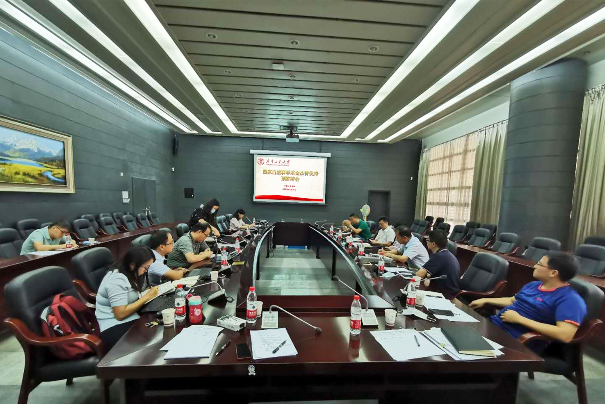

为做好2020年国家基金服务工作，帮助即将参加国家基金杰青优青答辩的老师“踢好临门一脚”。科技与人文研究院于7月18日上午，在大学城校区大讲堂举行2020年国家自然科学基金杰青、优青答辩预演会。副校长栾天罡教授、信息工程学院秦玉文教授、科技与人文研究院院长鲁仁全教授、环境科学与工程学院安太成教授、中山大学李朝晖教授作为答辩专家参加本次会议。会议由科技与人文研究院副院长陈辉主持。
持续四个多小时的预演会按照正式答辩程序分为申请人汇报和专家质询两个环节进行。会上，栾天罡副校长还勉励大家要多学、多看、多听、多交流，不断增长见识，激发创新思维并付诸到科研实践中。要有开放的学术思维和科研激情，真正将国际上前沿的学术思想、方法和知识基础打牢不要错失一代人的美好时光。
答辩结束后，五位专家又逐一为每位答辩老师从学术定位、成果凝练、答辩技巧、PPT修改等方面提出许多中肯的指导意见，参加答辩的老师纷纷表示受益良多，将根据各位专家的意见认真备战，力创佳绩。
